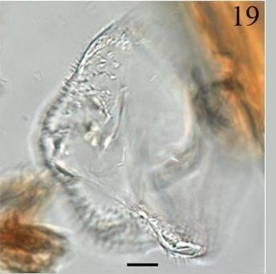
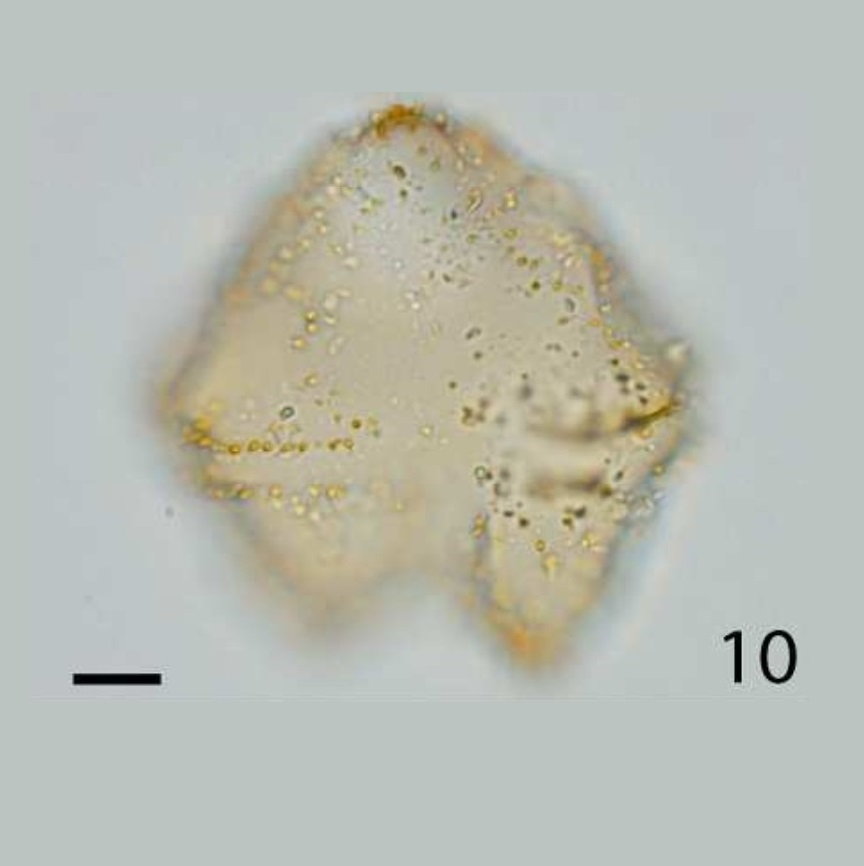

CYSTS LIST
- Achomosphaera andalousiensis
- Alexandrium catenella
- Alexandrium kutnerae
- Alexandrium margalefi
- Alexandrium minutum
- Alexandrium peruvianum
- Alexandrium pseudogoniaulax
- Alexandrium tamarense
- Alexandrium taylori
- Alexandrium spp.
- Archaeperidinium bailongense, cyst of
- Archaeperidinium constrictum, cyst of
- Archaeperidinium minutum, cyst of
- Archaeperidinium monospinum, cyst of
- Archaeperidinium saanichi, cyst of
- Archaeperidinium sp., cyst of
- Ataxiodinium choane
- Ataxiodinium confussum
- Ataxiodinium zevenboomii
- Ataxiodinium sp.
- Atlanticodinium striaticonulum
- Barrufeta resplendens, cyst of
- Biecheleria baltica, cyst of
- Biecheleria cincta, cyst of
- Biecheleria sp., cyst of
- Bitectatodinium spongium
- Bitectatodinium tepikiense
- Bitectatodinium serratum
- Bitectatodinium sp.
- Boreadinium breve, cyst of
- Brigantedinium assymmetricum
- Brigantedinium auranteum
- Brigantedinium cariacoense
- Brigantedinium majusculum
- Brigantedinium simplex
- Brigantedinium sp.
- Capisocysta lata
- Caspidinium rugosum
- Cristadinium striatiserratum
- Cryodinium matsuokai
- Cryodinium meridianum
- Cryodinium sp.
- Dalella chathamensis
- Dapsilidinium pastielsii
- Desotodinium wrennii
- Diplopelta globula, cyst of
- Diplopelta symmetrica, cyst of
- Diplopsalis latipeltata
- Diplopsalis lenticula
- Diplopsalis ovata
- Dubridinium caperatum, cyst of
- Dubridinium cassiculum, cyst of
- Dubridinium cavatum, cyst of
- Dubridinium ulsterum, cyst of
- Dubridinium spp., cyst of
- Echinidinium aculeatum
- Echinidinium bispiniformum
- Echinidinium delicatum
- Echinidinium karaense
- Echinidinium granulatum
- Echinidinium sleipnerensis
- Echinidinium transparantum
- Echinidinium zonneveldiae
- Echinidinium sp.
- Gonyaulax baltica, cyst of
- Gymnodinium catenatum, cyst of
- Gymnodinium inusitatum, cyst of
- Gymnodinium microreticulatum, cyst of
- Gymnodinium nolerii, cyst of
- Gymnodinium trapeziforme, cyst of
- Huia caspica, cyst of
- Impagidinium aculeatum
- Impagidinium caspienense
- Impagidinium japonicum
- Impagidinium pallidum
- Impagidinium paradoxum
- Impagidinium patulum
- Impagidinium plicatum
- Impagidinium sphaericum
- Impagidinium strialatum
- Impagidinium variaseptum
- Impagidinium velorum
- Impagidinium sp.
- Islandinium brevispinosum
- Islandinium? cezare
- Islandinium minutum
- Islandinium pacificum
- Lebouraia pusilla, cyst of
- Leipokatium invisitatum
- Lejeunecysta acuminate
- Lejeunecysta adeliensis
- Lejeunecysta attenuata
- Lejeunecysta beinenensis
- Lejeunecysta catomus
- Lejeunecysta communis
- Lejeunecysta cowiei
- Lejeunecysta epidoma
- Lejeunecysta fallax
- Lejeunecysta globosa
- Lejeunecysta granosa
- Lejeunecysta hyalina
- Lejeunecysta katatonos
- Lejeunecysta lata
- Lejeunecysta marieae
- Lejeunecysta oliva
- Lejeunecysta paratenella
- Lejeunecysta pulchra
- Lejeunecysta rotunda
- Lejeunecysta sabrina
- Lejeunecysta sp.
- Lingulodinium hemicystum
- Lingulodinium machaerophorum
- Margalefidinium polykrikoides, cyst of
- Melitasphaeridium angustum
- Melitasphaeridium choanophorum
- Nematosphaeropsis labyrinthus
- Nematosphaeropsis lemniscata
- Nematosphaeropsis rigida
- Nematosphaeropsis scala
- Nematosphaeropsis spp.
- Niea acanthocysta, cyst of
- Niea chinensis, cyst of
- Niea torta, cyst of
- Oblea acathocysta, cyst of
- Oblea rotunda, cyst of
- Operculodinium aguinawense
- Operculodinium centrocarpum
- Operculodinium crassum
- Operculodinium giganteum
- Operculodinium israelianum
- Operculodinium janduchenei
- Operculodinium longispinigerum
- Operculodinium microtriainum
- Operculodinium piaseckii
- Operculodinium tegillatum
- Operculodinium sp.
- Pentapharsodinium dalei, cyst of
- Pentaplacodinium saltonense, cyst of
- Peridinium ponticum
- Polarella glacialis, cyst of
- Polykrikos hatmannii, cyst of
- Polykrikos kofoidii, cyst of
- Polykrikos quadratus, cyst of
- Polykrikos schwartzii, cyst of
- Polykrikos sp., cyst of
- Polysphaeridium zoharyi
- Protoperidinium americanum, cyst of
- Protoperidinium biconicum, cyst of
- Protoperidinium conicoides, cyst of
- Protoperidinium denticulatum, cyst of
- Protoperidinium excentricum, cyst of
- Protoperidinium fukuyoi, cyst of
- Protoperidinium fuzhouense, cyst of
- Protoperidinium humile, cyst of
- Protoperidinium lattissimum, cyst of
- Protoperidinium lewisiae, cyst of
- Protoperidinium monospinum, cyst of
- Protoperidinium nudum, cyst of
- Protoperidinium parthenopes, cyst of
- Protoperidinium punctulatum, cyst of
- Protoperidinium stellatum, cyst of
- Protoperidinium thorianum, cyst of
- Protoperidinium thulesense, cyst of
- Protoperidinium tricingulatum, cyst of
- Pyxidinopsis braboi
- Pyxidinopsis psilata
- Pyxidinopsis reticulata
- Pyxidinopsis reticulata (okhotsk)
- Pyxidinopsis sp.
- Qia_lebouriae
- Quinquecuspis concreta
- Scrippsiella acuminata
- Scrippsiella crystallina
- Scrippsiella erinaceus
- Scrippsiella spinifera
- Scrippsiella triffida
- Scrippsiella trochoidea
- Selenopemphix antarctica
- Selenopemphix armageddonensis
- Selenopemphix brevispinosum
- Selenopemphix brinkhuisii
- Selenopemphix conspicua
- Selenopemphix coronata
- Selenopemphix crenata
- Selenopemphix dionaeacysta
- Selenopemphix islandensis
- Selenopemphix nephroides
- Selenopemphix quanta
- Selenopemphix tholus
- Selenopemphix undulata
- Selenopemphix sp.
- Spiniferites alaskensis
- Spiniferites asperulus
- Spiniferites belerius
- Spiniferites bentorii
- Spiniferites bulloideus
- Spiniferites cruciformis
- Spiniferites delicatus
- Spiniferites elongatus
- Spiniferites frigidus
- Spiniferites hainanensis
- Spiniferites hyperacanthus
- Spiniferites lazus
- Spiniferites ludhamensis
- Spiniferites membranaceus
- Spiniferites mirabilis
- Spiniferites multisphaerus
- Spiniferites pachydermus
- Spiniferites pacificus
- Spiniferites ramosus
- Spiniferites ristingensis
- Spiniferites septentrionalis
- Spiniferites spinatus
- Spiniferites splendidus
- Stelladinium abei
- Stelladinium bifurcatum
- Stelladinium denticulatum
- Stelladinium reidii
- Stelladinium robustum
- Stelladinium stellatum
- Stelladinium spp.
- Tectatodinium pellitum
- Trinovantedinium applanatum
- Trinovantedinium ferugnomatum
- Trinovantedinium glorianum
- Trinovantedinium harpagonium
- Trinovantedinium pallidifulvum
- Trinovantedinium variabile
- Trinovantedinium sp.
- Tuberculodinium vancampoae
- Votadinium bengalensis
- Votadinium calvum
- Votadinium concavum
- Votadinium elongatum
- Votadinium nanhaiense
- Votadinium pontifossatum
- Votadinium psilodora
- Votadinium reidii
- Votadinium rhomboideum
- Votadinium spinosum
- Xandarodinium xanthum
TRINOVANTEDINIUM APPLANATUM
Color: *Transparent. **Pale to hyaline.
Surface: *Single layered.
Shape: *Peridinioid **Dorsoventrally compressed, angular pentagonal to rounded peridinioid outline. Short solid protuberance may be present on the apical horn.
Central body: **54 to 96 um. (length).
Process length: **5 to 7 um. (length).
Process: **Short and solid, with acuminate or more commonly minutely expanded tips. They are aligned along the cingular margins and have an irregular intratabular distribution, except for the wide sulcal area where ornamentation is lacking.
Archeopyle: **Intercalary (2a), subrectangular and may be wider than high.
Septa: -
Sulcus: -
Distiguishing characteristics: **Is the only known living protoperidinacean cyst type that lacks a pigmented wall.
Differs from:
Trinovantedinium pallidifulvum: **is being larger, more elongate body and longer processes.
DESCRIPTION:
Relatively large dorsoventrally compressed cyst with an angular pentagonal to rounded peridinioid outline. The wall is single-layered and pale to hyaline. A short solid protuberance may be present on the apical horn. The processes are short and solid with acuminate or, more commonly, minutely expanded tips. They are aligned along the cingular margins and have an irregular intratabular distribution elsewhere on the cyst, except for the wide sulcal area where ornamentation is lacking. A flagellar scar may be present. Archeopyle intercalary (2a), subrectangular in outline and may be wider than high. (Extracted from Van Nieuwenhove et al., 2020).
LOWEST STRATIGRAPHIC OCCURRENCE:
Williams et al. (2004) considered the lowest appearance of Trinovantedinium applanatum as marking the base of the Miocene. However, Miocene specimens are often labelled as “cf.” (e.g., Lenoir and Hart, 1986; Manum et al., 1989; de Verteuil and Norris, 1992; Zevenboom, 1997; Londeix and Jan du Chêne, 1998), and when depicted (e.g., Edwards, 1986, 1990; Kumar and Saxena, 1997; El Beialy and Ali, 2002; Soliman et al., 2012) they appear somewhat different from Holocene reference specimens (Bradford, 1977; Reid, 1977). It is therefore difficult to confidently identify the lowest common occurrence level of Trinovantedinium applanatum, which might be as high as Pliocene or lowermost Quaternary. (Extracted from Van Nieuwenhove et al., 2020).
IMAGES:
| 1 | 2 | 3 |
| 4 | 5 | 6 |
 7 7 |
8 | 9 |
| 10 | 11 | 12 |
| 13 | 14 |  15 15 |
| 16 | 17 | 18 |
| 19 | 20 | 21 |
| 22 | 23 | 24 |
| 25 | 26 | 27 |
| 28 | 29 | 30 |
| 31 | 32 | 33 |
| 34 | 35 | 36 |
| 37 | 38 |  39 39 |
| 40 | 41 |  42 42 |
| 43 |  44 44 |
 45 45 |
| 46 | 47 |
IMAGES REFERENCE:
1. Trinovantedinium applanatum. Bright-field photomicrographs. Cyst transparant, peridinioid in shape and beset with made processes, 98-2A, optical sections. Scale bar: 10 um. (Van Hauwaert, 2016 - Plate I-19).
2. Trinovantedinium applanatum. Bright-field photomicrographs. Cyst transparant, peridinioid in shape and beset with made processes, 98-2A, optical sections. Scale bar: 10 um. (Van Hauwaert, 2016 - Plate I-20).
3. Trinovantedinium applanatum.
4. Trinovantedinium applanatum. Bright-field photomicrographs. CPG, slide 1, O62/3, dorsal surface. Scale bar: 10 um. (Pospelova, 2005 - Figure 7-5).
5. Trinovantedinium applanatum. Non-indigenous species found in the ballast sediment of ships sampled on the East coast of Canada. Scale bar: 10 um. (Casas Monroy, 2010 - Figure 6-I).
6. Trinovantedinium applanatum. Photomicrographs of selected heterotrophic dinocyst species. Scale bar: 20 um. Sample WP10, Serripes Zone (Verhoeven & Louwye, 2012 - Plate 1-A).
7. Trinovantedinium applanatum. Morphological features of some dinoflagellate cysts (Yoon et al., 2014 - Plate IV-4).
8. Trinovantedinium applanatum. Ventral view. Scale bars: 10 um. (Mertens et al., 2017 - Plate 1-10).
9. Trinovantedinium applanatum. Cross section. Scale bars: 10 um. (Mertens et al., 2017 - Plate 1-11).
10. Trinovantedinium applanatum. Dorsal view showing operculum. Scale bars: 10 um. (Mertens et al., 2017 - Plate 1-12).
11. Trinovantedinium applanatum. Peritabular distribution of processes. Scale bars: 10 um. (Mertens et al., 2017 - Plate 1-13).
12. Trinovantedinium applanatum. Ventral view showing process distribution on the hypotheca. Scale bars: 10 um. (Mertens et al., 2017 - Plate 1-14).
13. Trinovantedinium applanatum. Ventral view showing process distribution on the hypotheca. Scale bars: 10 um. (Mertens et al., 2017 - Plate 1-15).
14. Trinovantedinium applanatum. High focus to low focus of single 1054 specimen from 11-12 cm. depth in core po287-39-1B. Scale bar: 10 um. (Mertens et al., 2017 - Plate 4-1).
15. Trinovantedinium applanatum. High focus to low focus of single 1054 specimen from 11-12 cm. depth in core po287-39-1B. Scale bar: 10 um. (Mertens et al., 2017 - Plate 4-2).
16. Trinovantedinium applanatum. High focus to low focus of single 1054 specimen from 11-12 cm. depth in core po287-39-1B. Scale bar: 10 um. (Mertens et al., 2017 - Plate 4-3).
17. Trinovantedinium applanatum. High focus to low focus of single 1054 specimen from 11-12 cm. depth in core po287-39-1B. Scale bar: 10 um. (Mertens et al., 2017 - Plate 4-4).
18. Trinovantedinium applanatum. Different orientations of single specimen isolated from the German 1056 Wadden Sea. Scale bar: 10 um. (Mertens et al., 2017 - Plate 4-5).
19. Trinovantedinium applanatum. Different orientations of single specimen isolated from the German 1056 Wadden Sea. Scale bar: 10 um. (Mertens et al., 2017 - Plate 4-6).
20. Trinovantedinium applanatum. Other specimen from the German Wadden Sea. 11-1057. Scale bar: 10 um. (Mertens et al., 2017 - Plate 4-7).
21. Trinovantedinium applanatum. Different orientations of single specimen isolated from the German 1056 Wadden Sea. Scale bar: 10 um. (Mertens et al., 2017 - Plate 4-8).
22. Trinovantedinium applanatum. Scale bar: 10 um. (Mertens et al., 2017 - Plate 4-9).
23. Trinovantedinium applanatum. Different orientations of single specimen isolated from the German 1056 Wadden Sea. Scale bar: 10 um. (Mertens et al., 2017 - Plate 4-10).
24. Trinovantedinium applanatum. Scale bar: 10 um. (Mertens et al., 2017 - Plate 4-11).
25. Trinovantedinium applanatum. Scale bar: 10 um. (Mertens et al., 2017 - Plate 4-12).
26. Trinovantedinium applanatum. Scanning electron microscope photographs of specimens isolated from Vie River st. 10 1058. Scale bar: 10 um. (Mertens et al., 2017 - Plate 4-13).
27. Trinovantedinium applanatum. Ocurring in recent sediments. Different views of single specimen.Scale bar: 10 um. (Mertens et al., 2017 - Plate 5-1).
28. Trinovantedinium applanatum. Ocurring in recent sediments. Different views of single specimen. Scale bar: 10 um. (Mertens et al., 2017 - Plate 5-2).
29. Trinovantedinium applanatum. Ocurring in recent sediments. Type A from Red Sea. Scale bar: 10 um. (Mertens et al., 2017 - Plate 5-3).
30. Trinovantedinium applanatum. Ocurring in recent sediments. Specimen from 1-2 cm. core depth from core CIRCE03AR 25P 1064. (Mertens et al., 2017 - Plate 5-4).
31. Trinovantedinium applanatum. Ocurring in recent sediments. Different views of single specimen. Scale bar: 10 um. (Mertens et al., 2017 - Plate 5-5).
32. Trinovantedinium applanatum. Ocurring in recent sediments. Different views of single specimen. Scale bar: 10 um. (Mertens et al., 2017 - Plate 5-6).
33. Trinovantedinium applanatum. Ocurring in recent sediments. Different views of single specimen. Scale bar: 10 um. (Mertens et al., 2017 - Plate 5-7).
34. Trinovantedinium applanatum. Ocurring in recent sediments. Type B from sample 11B 1065, offshore Greenland. Scale bar: 10 um. (Mertens et al., 2017 - Plate 5-8).
35. Trinovantedinium applanatum. Ocurring in recent sediments. Type B from sample 11B 1065, offshore Greenland. Scale bar: 10 um. (Mertens et al., 2017 - Plate 5-9).
36. Trinovantedinium applanatum. Ocurring in recent sediments. Type 1066 B from sample 1B, offshore Greenland. Scale bar: 10 um. (Mertens et al., 2017 - Plate 5-10).
37. Trinovantedinium applanatum. Cyst stage, general shape of cyst. Scale bar: 10 um. (Mertens et al., 2017 - Plate 2-10).
38. Trinovantedinium applanatum. Cyst stage, ventral view showing peritabular distribution of processes. Scale bar: 10 um. (Mertens et al., 2017 - Plate 2-11).
39. Trinovantedinium applanatum. Cyst stage, ventral view showing presence of 2 flagellar scars. Scale bar: 10 um. (Mertens et al., 2017 - Plate 2-12).
40. Trinovantedinium applanatum. Cyst stage, lateral view. Scale bar: 10 um. (Mertens et al., 2017 - Plate 2-13).
41. Trinovantedinium applanatum. Cyst stage, dorsal view showing operculum. Scale bar: 10 um. (Mertens et al., 2017 - Plate 2-14).
42. Trinovantedinium applanatum. Cyst stage, dorsal view of hypotheca showing presence of striations on this specimen. Scale bar: 10 um. (Mertens et al., 2017 - Plate 2-15).
43. Trinovantedinium applanatum. MARUM. Dorsal View.
44. Trinovantedinium applanatum. Ventral view of specimen from the Pacific Ocean. Scale bar: 10 um. (Van Nieuwenhove et al., 2020 - Plate 25-9).
45. Trinovantedinium applanatum. High to low focus, ventral view, of specimen from the Iceland Plateau (core DANA 12-11/2-GC01). Scale bar: 10 um. (Van Nieuwenhove et al., 2020 - Plate 25-10).
46. Trinovantedinium applanatum. High to low focus, ventral view, of specimen from the Iceland Plateau (core DANA 12-11/2-GC01). Scale bar: 10 um. (Van Nieuwenhove et al., 2020 - Plate 25-11).
47. Trinovantedinium applanatum. High to low focus, ventral view, of specimen from the Iceland Plateau (core DANA 12-11/2-GC01). Scale bar: 10 um. (Van Nieuwenhove et al., 2020 - Plate 25-12).
BIBLIOGRAPHY:
- Casas-Monroy, O., Roy, S., & Rochon, A. (2011). Ballast sediment-mediated transport of non-indigenous species of dinoflagellates on the East Coast of Canada. Aquatic Invasions, 6(3), 231-248.
- Mertens, K. N., Gu, H., Gurdebeke, P. R., Takano, Y., Clarke, D., Aydin, H., ... & Matsuoka, K. (2019). A review of rare, poorly known, and morphologically problematic extant marine organic-walled dinoflagellate cyst taxa of the orders Gymnodiniales and Peridiniales from the Northern Hemisphere. Marine Micropaleontology, 101773.
- Pospelova, V., Chmura, G. L., Boothman, W. S., & Latimer, J. S. (2005). Spatial distribution of modern dinoflagellate cysts in polluted estuarine sediments from Buzzards Bay (Massachusetts, USA) embayments. Marine Ecology Progress Series, 292, 23-40.
- Van Hauwaert, T. (2016). Recent dinoflagellate cysts from the Chesapeake Estuary (Maryland and Virginia, USA): taxonomy and ecological preferences (Doctoral dissertation, M. Sc. Thesis, Ghent University, Ghent, Belgium).
- Van Nieuwenhove, N., Head, M. J., Limoges, A., Pospelova, V., Mertens, K. N., Matthiessen, J., ... & Rochon, A. (2020). An overview and brief description of common marine organic-walled dinoflagellate cyst taxa occurring in surface sediments of the Northern Hemisphere. Marine Micropaleontology, 159, 101814. (**)
- Verhoeven, K., & Louwye, S. (2013). Palaeoenvironmental reconstruction and biostratigraphy with marine palynomorphs of the Plio–Pleistocene in Tjörnes, Northern Iceland. Palaeogeography, Palaeoclimatology, Palaeoecology, 376, 224-243.
- Yoon, Y. H., & Shin, H. H. (2013). Summary on the Dinoflagellate Cyst Assemblages of Modern Sediments from Korean Coastal Waters and Adjoining Sea. Korean Journal of Environmental Biology, 31(4), 243-274.
- Zonneveld, K. A., & Pospelova, V. (2015). A determination key for modern dinoflagellate cysts. Palynology, 39(3), 387-409. (*)